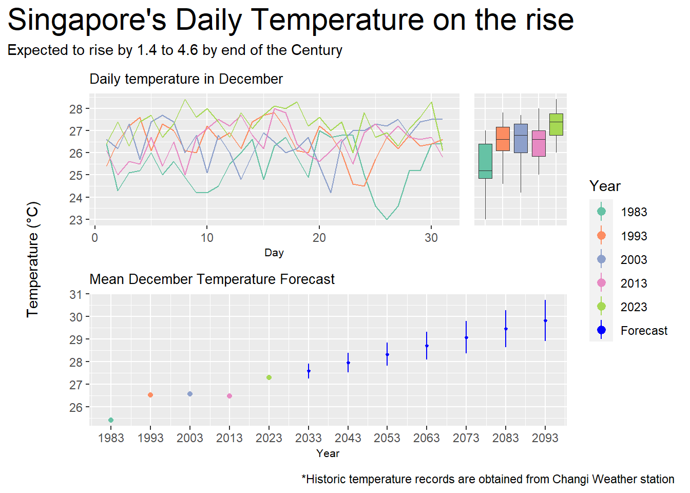

Show the code
pacman::p_load(tidyverse,
dplyr,
patchwork,
ggthemes,
hrbrthemes,
ggiraph,
RColorBrewer)February 13, 2024
February 18, 2024
According to an office report as shown in the info-graphic below,
As a visual analytics greenhorn, you are keen to apply newly acquired visual interactivity and visualizing uncertainty methods to validate the claims presented above.
First, let us prepare the required data.
We begin by loading the required R packages.
The data we will be using is the historical daily temperature data from Meteorological Service Singapore website. We will be looking at the daily records of July in the years 1983, 1993, 2003, 2013, and 2023 at the Changi Weather Station.
The column name for temperature in 2023 is inconsistent with the names used before. It now has an extra latin character included (Â). The following code merges the 2 corresponding columns together into 1 column.
# Merging column with latin character together with the one without
data$`Minimum Temperature (°C)` <- ifelse(data$Year == 2023, data$`Minimum Temperature (°C)`, data$`Minimum Temperature (°C)`)
data$`Maximum Temperature (°C)` <- ifelse(data$Year == 2023, data$`Maximum Temperature (°C)`, data$`Maximum Temperature (°C)`)
data$`Mean Temperature (°C)` <- ifelse(data$Year == 2023, data$`Mean Temperature (°C)`, data$`Mean Temperature (°C)`)We also want to look at the data at the Yearly level instead of daily. To do this, we group the data by Year and summarize their Mean values.
Next, renaming some columns to remove white spaces in names for easier coding later on. Also, we drop all other irrelevant data.
# Take only temperature and relevant data
day_data <-
data[c(
"Station",
"Year",
"Month",
"Day",
"Mean Temperature (°C)",
"Maximum Temperature (°C)",
"Minimum Temperature (°C)"
)]
# Rename columns to remove white spaces
colnames(day_data) <-
c(
"Station",
"Year",
"Month",
"Day",
"mean_day_temp",
"max_day_temp",
"min_day_temp"
)Finally, we want to do some forecasting to predict future temperatures. To do this, we use the lm function to perform linear regression. Then, we use the model to predict values for upcoming years 2033, 2043, and so on. We also store the 95% confidence interval values which will be used to observe the prediction range later.
# Regression with day data
model = lm(mean_day_temp ~ Year, day_data)
# Create results data frame
forecast = data.frame(Year = c(2033,
2043,
2053,
2063,
2073,
2083,
2093))
# Forecast temperatures and store in results data frame
forecast = cbind(forecast, predict(model, forecast, interval = "confidence"))The visualization below displays historical temperature records for the month of December measured at Singapore’s Changi Weather Station every 10 years from 1983 to 2023. In addition, a forecast is made using simple linear regression from 2033 to 2093 which shows the expected rise in temperature till the end of the century.

palette_choice <- c("#66C2A5","#FC8D62","#8DA0CB","#E78AC3","#A6D854","blue")
p1 <- ggplot(data=day_data,
aes(x = Day,
y = mean_day_temp,
color = as.factor(Year))) +
geom_line(
show.legend = F) +
ylab(element_blank()) +
xlab("Day") +
ggtitle("Daily temperature in December") +
theme(
plot.title = element_text(size = 10),
axis.title.x = element_text(size = 8)
) +
scale_color_manual(name = "Year", values = palette_choice)
p2 <- ggplot(
data=day_data,
aes(x = as.factor(Year),
y = mean_day_temp,
fill = as.factor(Year))
) +
geom_boxplot(
linewidth = 0.1,
outlier.shape = NA,
show.legend = F
) +
ylab(element_blank()) +
xlab(element_blank()) +
theme(
axis.text.x = element_blank(),
axis.ticks.x = element_blank()) +
scale_fill_manual(name = "Year", values = palette_choice)
p3 <- ggplot() +
geom_point(
data = month_data,
aes(x = Year,
y = mean_month_temp,
color = as.factor(Year))
) +
geom_pointrange(
data = forecast,
aes(x = Year,
y = fit,
color = c("Forecast"),
ymin = lwr,
ymax = upr,
),
fatten = 0.5
) +
ylab(element_blank()) +
ggtitle("Mean December Temperature Forecast") +
theme(
plot.title = element_text(size = 10),
axis.title.x = element_text(size = 8)
) +
scale_x_continuous(
breaks = seq(1983,2093,10),
limits = c(1983,2093)
) +
scale_color_manual(name = "Year", values = palette_choice)
y_lab <-
ggplot() +
annotate(geom = "text", x = 1, y = 1, label = "Temperature (°C)", angle = 90) +
coord_cartesian(clip = "off") +
theme_void()
y_lab + ((p1 + p2 + plot_layout(
axes = "collect",
widths = c(4,1)
)) / p3 +
plot_layout(
guides = "collect",
axes = "collect",
axis_titles = "collect",
heights = c(1,1)
)) +
plot_layout(
widths = c(0.1,1)
) +
plot_annotation(
title = "Singapore's Daily Temperature on the rise",
subtitle = "Expected to rise by 1.4 to 4.6 by end of the Century",
caption = "*Historic temperature records are obtained from Changi Weather station",
theme = theme(plot.title = element_text(size = 22))
) Temperature did rise in the last half century as seen in the line chart and boxplot, more notably between 1983 to 1993 and 2013 to 2023.
The lowest daily mean temperature in 2023 is almost as high as the highest daily mean temperature in 1983.
Overall, the mean temperature in December increased from 25.4 in 1983 to 27.3 in 2023, an average rise of about 0.48 each year.
Following this trend, the temperature is predicted to reach a monthly mean of 29.8 in 2093, with a 95% confidence interval between the high of 30.7 and the low of 28.9.
This means that temperature will rise by around 1.6 to 3.4 by the end of the century, which falls slightly short of the claim that temperature is expected to rise by around 1.4 to 4.6 in the same period.
Now, we add interactivity to the visualization.
palette_choice <- c("#66C2A5","#FC8D62","#8DA0CB","#E78AC3","#A6D854","blue")
p1 <- ggplot(data=day_data,
aes(x = Day,
y = mean_day_temp,
color = as.factor(Year))) +
geom_line_interactive(
aes(tooltip = paste("Year: ", Year),
data_id = Year),
show.legend = F) +
ylab(element_blank()) +
xlab("Day") +
ggtitle("Daily temperature in December") +
theme(
plot.title = element_text(size = 10),
axis.title.x = element_text(size = 8)
) +
scale_color_manual(name = "Year", values = palette_choice)
p2 <- ggplot(
data=day_data,
aes(x = as.factor(Year),
y = mean_day_temp,
fill = as.factor(Year))
) +
geom_boxplot_interactive(
aes(tooltip = paste("Year: ", Year),
data_id = Year),
linewidth = 0.1,
outlier.shape = NA,
show.legend = F
) +
ylab(element_blank()) +
xlab(element_blank()) +
theme(
axis.text.x = element_blank(),
axis.ticks.x = element_blank()) +
scale_fill_manual(name = "Year", values = palette_choice)
p3 <- ggplot() +
geom_point_interactive(
data = month_data,
aes(x = Year,
y = mean_month_temp,
tooltip = paste("Year: ", Year, "\nMean Monthly Temp: ", round(mean_month_temp,1), "°C"),
data_id = Year,
color = as.factor(Year))
) +
geom_pointrange_interactive(
data = forecast,
aes(x = Year,
y = fit,
color = c("Forecast"),
ymin = lwr,
ymax = upr,
tooltip = paste(Year,
" Forecast:\n",
round(fit,2),
" +/- ",
round(fit-lwr,2),
"°C"),
data_id = Year),
fatten = 0.5
) +
ylab(element_blank()) +
ggtitle("Mean December Temperature Forecast") +
theme(
plot.title = element_text(size = 10),
axis.title.x = element_text(size = 8)
) +
scale_x_continuous(
breaks = seq(1983,2093,10),
limits = c(1983,2093)
) +
scale_color_manual(name = "Year", values = palette_choice)
y_lab <-
ggplot() +
annotate(geom = "text", x = 1, y = 1, label = "Temperature (°C)", angle = 90) +
coord_cartesian(clip = "off") +
theme_void()
girafe(
code = print(y_lab + ((p1 + p2 + plot_layout(
axes = "collect",
widths = c(4,1)
)) / p3 +
plot_layout(
guides = "collect",
axes = "collect",
axis_titles = "collect",
heights = c(1,1)
)) +
plot_layout(
widths = c(0.1,1)
) +
plot_annotation(
title = "Singapore's Daily Temperature on the rise",
subtitle = "Expected to rise by 1.4 to 4.6 by end of the Century",
caption = "*Historic temperature records are obtained from Changi Weather station",
theme = theme(plot.title = element_text(size = 22))
)),
width_svg = 6,
height_svg = 6*0.618,
options = list(
opts_hover(css = "stroke-width:2;"),
opts_hover_inv(css = "opacity:0.2;")
)
) Hovering over any point would highlight the corresponding years in the other charts, making it easier to view the distribution for each year.
Tooltips displays mean monthly and predicted temperatures when hovering over points or forecasts in the point/pointrange chart. Users no longer need to check the y-axis on the far left.